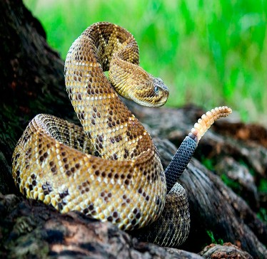
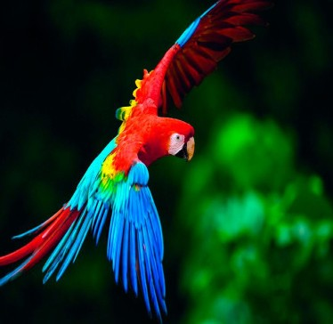
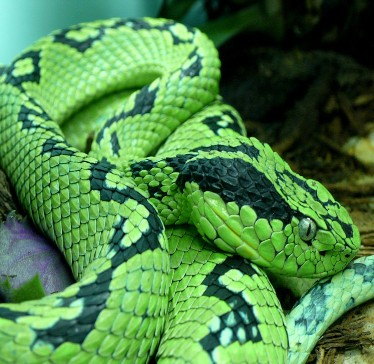
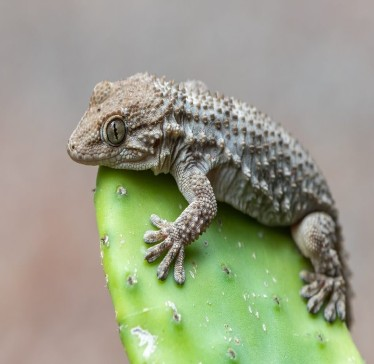

FUNDACIÓN DEL ESTADO
Oaxaca oficialmente llamada Oaxaca de Juárez o también Ciudad de Oaxaca, es una ciudad Mexicana capital del estado de Oaxaca así, como cabecera del municipio homónimo. ubicado en los valles centrales, a 550 km por carretera de la Ciudad de México, es la á localidad más extensa y poblada del estado y su centro n cultural. Los primitivos pobladores le llamaron Huaxyacac y fue fundada en 1486 por los guerreros aztecas de Ahuitzotl, emperador de México; quién la mandó a poner en las márgenes del Atoyac para vigilar la conducta de Cosijoeza rey de Zaachila, los cuales talaron aparte del bosque del guaje que existía en ese lugar y levantaron sus viviendas. en 1520 al reinicio de la guerra entre zapotecos y mixtecos por el territorio y el poder, terminó con la llegada de los españoles quién la denominaron guajaca por encontrarla próxima a un bosque de guajes. Francisco de Orozco llego a Oaxaca en diciembre de 1521, tras la caída de Tenochtitlán, fue enviada por el narco Hernán Cortés (quién mandó se le pusiera el nombre de segura de la frontera) ya que Moctezuma le había dicho que el oro provenía de esta región. Entre los acompañantes venía el clérigo Juan Díaz quién oficio la primera misa bajo un gran árbol que estaba en la Rivera del Río Atoyac y dónde actualmente se encuentra el Templo de San Juan de Dios. este lugar denominado Tepeaca por los primeros españoles que recidieron ahí, recibe en 1526 la autorización formal para luego ser reconocida como la villa de la nueva antequera en 1528 porque el oidor real Nuño de Guzmán era de antequera España. En 1532 recibe el título de "muy noble y Leal ciudad" llamándose antequera por el Rey Carlos V de España . ese nombre fue sustituido en 1821 por "Oaxaca" para palabra derivada de la lengua náhuatl -Huaxyacac- qué significa: en la nariz de los guajes En 1872 a la muerte del Benemérito de las Américas-Benito Juárez, recibe el nombre que actualmente ostenta "Oaxaca de Juárez" El descubrimiento colonial de la ciudad de Oaxaca se dio ir del hallazgo del monte Albán, uno de los más importantes tesoros arqueológicos de México. Los primitivos pobladores le llamaron Huaxyacac, al llegar los españoles la denominaron Guajaca, por encontrarla próxima a un bosque de guajes, Luego Hernán Cortés mandó que se le pusiera nombre de segura de la frontera, los primeros españoles residentes en el lugar la denominaron Tepeaca y después de antequera más tarde siguió llamándose Guajaca. Se le dio por nombre Oaxaca de Juárez en memoria del Gran Patricio benemérito de las Américas licenciado Benito Juárez.
ANIMALES ENDEMICOS
CASCABEL
GUACAMAYA
NAYUCA
SALAMANQUESA